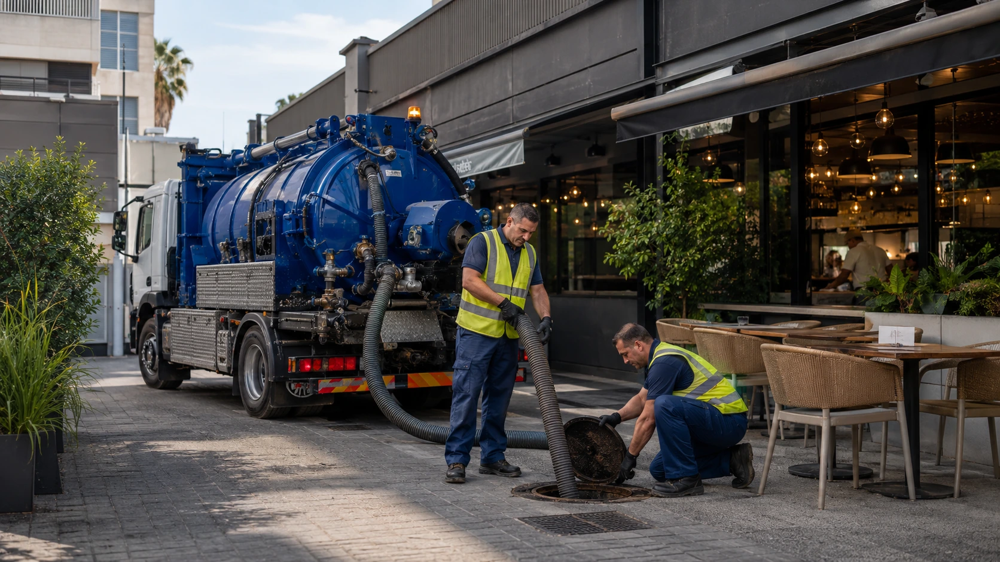
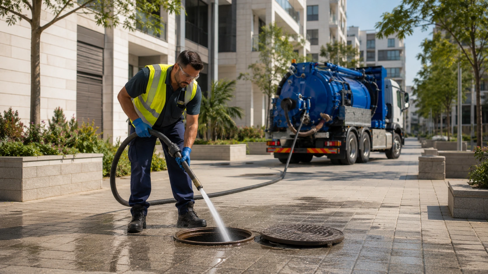
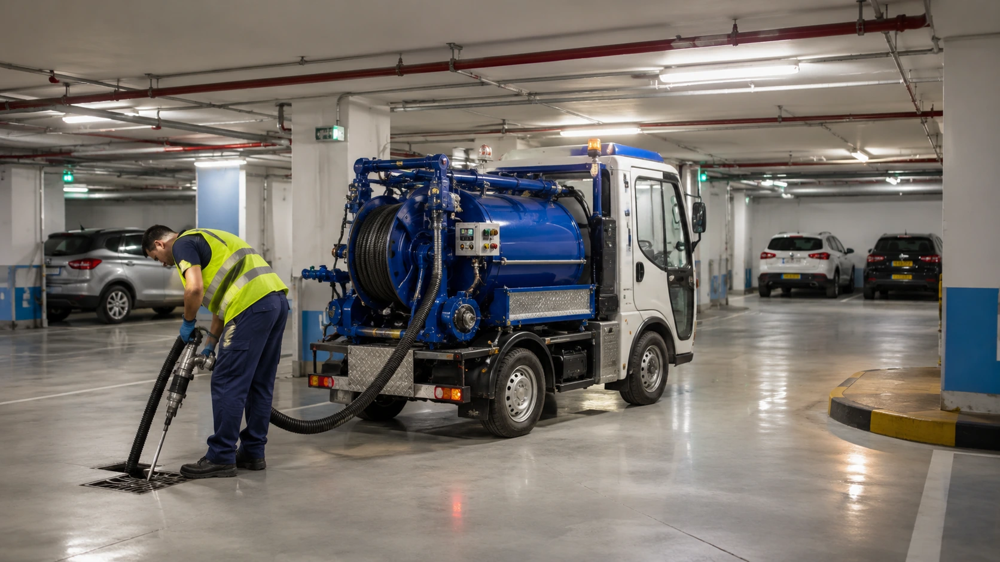

בור שומן מפריד שומנים ושמנים ממי השטיפה לפני שהם נכנסים למערכת הביוב. כאשר הבור מתמלא, השומן עלול לעבור לקווים, ליצור ריחות, להאט את הניקוז ולגרום לסתימות שמשבשות את פעילות המטבח.
שאיבה תקופתית מסייעת לשמור על נפח עבודה פנוי בבור ולצמצם הצטברות בקווים. תדירות השאיבה משתנה לפי גודל הבור, כמות העבודה, סוג המזון והרגלי הניקוי במקום.
במהלך שאיבת בור שומן מפנים את שכבת השומן, הנוזלים והבוצה שהצטברה בתחתית. לפי מצב הבור ניתן לבצע ניקוי ושטיפה של הדפנות, תוך בדיקת פתחי הכניסה והיציאה. בור שאינו מתוחזק בזמן עלול להפיץ ריח ולגרום לסתימות גם אחרי השאיבה, משום ששומן שכבר התקשה בתוך הקו דורש לעיתים שטיפה נפרדת. אנחנו מסייעים לבעלי עסקים לבנות שגרת שאיבה שמתאימה לעומס, בלי לקבוע תדירות אחידה שאינה מבוססת על השימוש בפועל.
מתאימה לעסקים שמעוניינים לפנות את הבור לפני שהוא מגיע למילוי שפוגע בתפקוד.
ריח חריף יכול להעיד על בור מלא, הצטברות בדפנות או בעיה בקו היציאה.
במקרים מסוימים ניתן לשטוף הצטברות שומן מהדפנות כחלק מהטיפול.
כאשר השומן עבר מהבור לצנרת, ייתכן שתידרש שטיפה בלחץ מעבר לשאיבת הבור.
ננסה לתאם את העבודה בשעה שמצמצמת הפרעה לפעילות המטבח וללקוחות.
| שירות | מחיר משוער | ממוצע |
|---|---|---|
| שאיבת בור שומן קטן | 650–1,100 ש״ח | כ-850 ש״ח |
| שאיבה וניקוי בור בינוני | 950–1,700 ש״ח | כ-1,300 ש״ח |
| שאיבה עם שטיפת קו שומנים | 1,500–2,800 ש״ח | כ-2,100 ש״ח |
המחיר משתנה לפי נפח הבור, עובי שכבת השומן, כמות הבוצה, הגישה, תדירות התחזוקה והצורך בשטיפת קווים.

אנחנו בוחנים את קצב ההצטברות כדי לעזור לקבוע שגרת שאיבה מעשית.
ננסה לתאם את העבודה בזמנים שמתאימים למטבח ולשמור על אזור העבודה מסודר.
אם השומן כבר חדר לצנרת, נסביר מתי שאיבה לבדה אינה מספיקה ונדרשת שטיפה.
רוצים להימנע מריח וסתימות במטבח? קבעו שאיבה תקופתית.
ללא עלות וללא התחייבות

נברר את גודל הבור, מועד השאיבה הקודמת ושעות הפעילות בעסק.
נבדוק את שכבת השומן, הבוצה ומצב פתחי הכניסה והיציאה.
נפנה את התכולה וננקה את הבור בהתאם לצורך ולמצבו.
נציע תדירות בדיקה או שאיבה לפי קצב ההצטברות שנראה במקום.